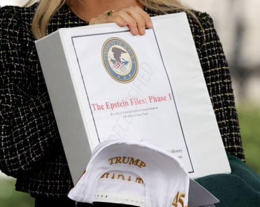

House Democrats on Tuesday demanded that the justice department release documents related to the disgraced financier Jeffrey Epstein ’s sex-trafficking case that mentions or references Donald Trump , citing a comment by Elon Musk after he fell out with the president this year.
The House judiciary committee’s ranking member, Jamie Raskin, together with 15 other Democrats sent a six-page letter to the US attorney general, Pam Bondi, accusing her of withholding some Epstein files to protect the president from any damaging disclosures.
They also called for the justice department to make public the second volume of former special counsel Jack Smith’s report into Trump’s alleged mishandling of classified documents, arguing that Bondi has a track record of using the justice department to protect the president.
“Stop protecting your boss and former client, release the Smith report in full without redactions immediately, and publicly release all documents in the Epstein files that mention or reference Donald Trump ,” the letter said.
No evidence has emerged to suggest Trump was connected to Epstein any more than has already become public, apart from a since-deleted X post by Elon Musk as he exited the White House under a cloud of controversy and accused the justice department of trying to insulate Trump from the matter.
“Trump is in the Epstein files. That is the real reason they have not been made public,” Musk wrote in his post in June.
The missive to Bondi came a day after the justice department and the FBI issued a memo that concluded that no secret client list of Epstein existed and reaffirmed the conclusion reached by federal investigators in 2019 that he died by suicide in a Manhattan jail cell awaiting trial.
The justice department also released video surveillance of the hallway outside of Epstein’s cell, although the digital clock on the tape skipped from 11:58:58pm to 12:00am. Officials did not address the jump and added that no further materials would be made public.
“This administration has repeatedly claimed that President Trump is ‘the most transparent and accessible president in American history’. So far, your DOJ has not only failed to live up to this promise, but you have also consistently hidden from the American public materials and information that may be damaging to President Trump,” the letter said.
Epstein file binders on 27 February 2025.Photograph: Kevin Lamarque/Reuters
The release of the Epstein files has become an unlikely goal for the Trump administration after Bondi spent months hyping up the materials as being full of damaging details related to child porn and sex trafficking, creating anticipation among a core group of the president’s supporters.
The release of the first batch of documents related to the files, handed out to handpicked Trump-world personalities at the White House in white binders bearing the imprimatur of the justice department’s seal, prompted widespread derision for containing no new information.
As detailed in the judiciary committee Democrats’ letter, Bondi then rapidly promised in a series of Fox News interviews that a number of teams at the department and the FBI were reviewing hundreds more pages from the Epstein files that would be made public in a second release.
But the second release has also fallen flat. The justice department’s Monday memo undercut Bondi’s own statements and repeated conclusions reached by federal investigators years earlier.
With Democrats in the minority, the request for the Epstein files or the second volume of Smith’s final report into the classified documents case is almost certain to go unanswered. It was not clear whether Republicans on the committee would join the request.
Republicans on the House judiciary committee have instead focused their time investigating the justice department’s criminal cases against Trump. The Guardian previously reported in May that the committee interviewed former classified documents case prosecutor Jay Bratt.
In that appearance, Bratt asserted his fifth amendment right against self-incrimination, which a spokesperson said he chose to do because “this administration and its proxies have made no effort to hide their willingness to weaponize the machinery of government against those they perceive as political enemies”.